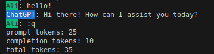

Find us on…
ForOpenAI


ForOpenAI: A community-maintained Fortran wrapper for the OpenAI API.
How to use
Prerequisites:
On Ubuntu, you need to install the curl development headers. Use the following command:
sudo apt install -y libcurl4-openssl-dev
Clone the repository:
You can clone the ForOpenAI repository from GitHub using the following command:
git clone https://github.com/gha3mi/foropenai.git
cd foropenai
OpenAI API Key Configuration:
Your Secret API key can be located by accessing the OpenAI User settings.
For enhanced security and convenience, it is strongly recommended to configure the API key as an environment variable.
-
On Ubuntu, use the following command, replacing
"your_api_key"with your actual API key:shell export OPENAI_API_KEY="your_api_key" -
(Optional) If desired for organizational purposes, you can also establish an optional environment variable on Ubuntu:
shell export OPENAI_ORG="your_organization" -
Alternatively, the OpenAI API key can be included in the
foropenai.jsonconfiguration file.json { "base": { "api_key": "OPENAI_API_KEY", "organization": "" } }
Use ChatGPT from the terminal:
fpm run
Example

Audio
Create transcription
program test_Transcription
use foropenai, only: Transcription
implicit none
type(Transcription) :: trs
call trs%set_base_data(file_name='foropenai.json')
call trs%set(file_name='foropenai.json')
call trs%create(file='test/audio.mp3')
call trs%print_assistant_response()
call trs%finalize()
end program test_Transcription
Settings
foropenai.json
{
"base": {
"api_key": "OPENAI_API_KEY",
"organization": ""
},
"Transcription": {
"url": "https://api.openai.com/v1/audio/transcriptions",
"model": "whisper-1",
"temperature": 0.0,
"language": "en",
"response_format": "json"
}
}
Result
text: FORTRAN stands for Formula Translation.
Create translation
program test_Translation
use foropenai, only: Translation
implicit none
type(Translation) :: trs
call trs%set_base_data(file_name='foropenai.json')
call trs%set(file_name='foropenai.json')
call trs%create(file='test/audio_de.mp3')
call trs%print_assistant_response()
call trs%finalize()
end program test_Translation
Settings
foropenai.json
{
"base": {
"api_key": "OPENAI_API_KEY",
"organization": ""
},
"Translation": {
"url": "https://api.openai.com/v1/audio/translations",
"model": "whisper-1",
"temperature": 0.0,
"response_format": "json"
}
}
Result
text: FORTRAN stands for Formula Translation.
Chat
Create chat completion
program test_ChatCompletion
use foropenai, only: ChatCompletion
implicit none
type(ChatCompletion) :: chat
call chat%set_base_data(file_name='foropenai.json')
call chat%set(file_name='foropenai.json')
call chat%init_messages(n=3)
call chat%messages(1)%set(role='system', content='You are a helpful assistant.')
call chat%messages(2)%set(role='user', content='Hello?')
call chat%messages(3)%set(role='assistant', content='')
call chat%print_user_message()
call chat%create()
call chat%print_assistant_response()
call chat%usage%print()
call chat%finalize()
end program test_ChatCompletion
Settings
foropenai.json
{
"base": {
"api_key": "OPENAI_API_KEY",
"organization": ""
},
"ChatCompletion": {
"user_name": "Ali",
"url": "https://api.openai.com/v1/chat/completions",
"model": "gpt-3.5-turbo",
"temperature": 1.0,
"max_tokens": 200,
"top_p": 1.0,
"frequency_penalty": 0.0,
"presence_penalty": 0.0,
"n": 1,
"stream": false
}
}
Result
Ali: Hello?
ChatGPT: Hello! How can I assist you today?
Image
Image Generation
program test_ImageGeneration
use foropenai, only: ImageGeneration
implicit none
type(ImageGeneration) :: image
call image%set_base_data(file_name='foropenai.json')
call image%set(file_name='foropenai.json')
call image%create(prompt='a cat with a computer')
call image%print_assistant_response()
call image%finalize()
end program test_ImageGeneration
Settings
foropenai.json
{
"base": {
"api_key": "OPENAI_API_KEY",
"organization": ""
},
"ImageGeneration": {
"user_name": "Ali",
"url": "https://api.openai.com/v1/images/generations",
"size": "1024x1024",
"n": 1,
"response_format": "url"
}
}
Result
fpm dependency
If you want to use ForOpenAI as a dependency in your own fpm project,
you can easily include it by adding the following line to your fpm.toml file:
[dependencies]
foropenai = {git="https://github.com/gha3mi/foropenai.git"}
API documentation
The most up-to-date API documentation for the master branch is available
here.
To generate the API documentation for ForOpenAI using
ford run the following
command:
ford ford.yml
Contributing
Contributions to ForOpenAI are welcome!
If you find any issues or would like to suggest improvements, please open an issue.